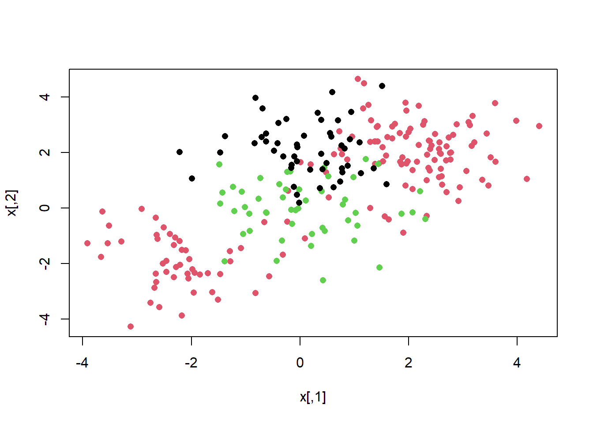

set.seed(1)
x <- matrix(rnorm(20 * 2), ncol = 2)
y <- c( rep (-1, 10) , rep (1 , 10) )
x[y == 1, ] <- x[ y == 1, ] + 1
plot(x, col = (3 - y), pch=16)
We use the {e1071} library in R to demonstrate the support vector classifier and the SVM. Another option is the {LiblineaR} library, which is useful for very large linear problems.
The {e1071} library contains implementations for a number of statistical learning methods. In particular, the svm() function can be used to fit a support vector classifier when the argument kernel = "linear" is used. A cost argument allows us to specify the cost of a violation to the margin. When the cost argument is small, then the margins will be wide and many support vectors will be on the margin or will violate the margin. When the cost argument is large, then the margins will be narrow and there will be few support vectors on the margin or violating the margin.
svm()We now use the svm() function to fit the support vector classifier for a given value of the cost parameter. Here we demonstrate the use of this function on a two-dimensional example so that we can plot the resulting decision boundary. We begin by generating the observations, which belong to two classes, and checking whether the classes are linearly separable.
set.seed(1)
x <- matrix(rnorm(20 * 2), ncol = 2)
y <- c( rep (-1, 10) , rep (1 , 10) )
x[y == 1, ] <- x[ y == 1, ] + 1
plot(x, col = (3 - y), pch=16)
They are not (i.e. you cannot separate the classes by drawing a straight line between them). Next, we fit the support vector classifier. Note that in order for the svm() function to perform classification (as opposed to SVM-based regression), we must encode the response as a factor variable. We now create a data frame with the response coded as a factor.
dat <- data.frame(x = x, y = as.factor(y))
library(e1071)
svmfit <- svm(y ~ ., data = dat, kernel = "linear",
cost = 10 , scale = FALSE )The argument scale = FALSE tells the svm() function not to scale each feature to have mean zero or standard deviation one; depending on the application, one might prefer to use scale = TRUE.
We can now plot the support vector classifier obtained:
plot(svmfit, dat) # first peek, not great
Note that the two arguments to the SVM plot() function are the output of the call to svm(), as well as the data used in the call to svm(). The region of feature space that will be assigned to the 1 class is shown in light yellow, and the region that will be assigned to the +1 class is shown in red. The decision boundary between the two classes is linear (because we used the argument kernel = "linear"), though due to the way in which the plotting function is implemented in this library the decision boundary looks somewhat jagged in the plot. (Note that here the second feature is plotted on the x-axis and the first feature is plotted on the y-axis, in contrast to the behavior of the usual plot() function in R.) The support vectors are plotted as crosses and the remaining observations are plotted as circles; we see here that there are seven support vectors. We can determine their identities as follows:
svmfit$index[1] 1 2 5 7 14 16 17We can obtain some basic information about the support vector classifier fit using the summary() command:
summary(svmfit)
Call:
svm(formula = y ~ ., data = dat, kernel = "linear", cost = 10, scale = FALSE)
Parameters:
SVM-Type: C-classification
SVM-Kernel: linear
cost: 10
Number of Support Vectors: 7
( 4 3 )
Number of Classes: 2
Levels:
-1 1This tells us, for instance, that a linear kernel was used with cost = 10, and that there were seven support vectors, four in one class and three in the other.
What if we instead used a smaller value of the cost parameter?
svmfit <- svm(y ~ ., data = dat, kernel = "linear",
cost = 0.1 , scale = FALSE )
plot(svmfit, dat) 
svmfit$index [1] 1 2 3 4 5 7 9 10 12 13 14 15 16 17 18 20Now that a smaller value of the cost parameter is being used, we obtain a larger number of support vectors, because the margin is now wider. Unfortunately, the svm() function does not explicitly output the coefficients of the linear decision boundary obtained when the support vector classifier is fit, nor does it output the width of the margin.
The {e1071} library includes a built-in function, tune(), to perform cross- validation. By default, tune() performs ten-fold cross-validation on a set of models of interest. In order to use this function, we pass in relevant information about the set of models that are under consideration. The following command indicates that we want to compare SVMs with a linear kernel, using a range of values of the cost parameter.
set.seed(1)
tune.out <- tune(svm, y ~ ., data = dat , kernel = "linear",
ranges = list(cost = c(0.001, 0.01, 0.1,
1, 5, 10, 100)))We can easily access the cross-validation errors for each of these models using the summary() command:
summary(tune.out)
Parameter tuning of 'svm':
- sampling method: 10-fold cross validation
- best parameters:
cost
0.1
- best performance: 0.05
- Detailed performance results:
cost error dispersion
1 1e-03 0.55 0.4377975
2 1e-02 0.55 0.4377975
3 1e-01 0.05 0.1581139
4 1e+00 0.15 0.2415229
5 5e+00 0.15 0.2415229
6 1e+01 0.15 0.2415229
7 1e+02 0.15 0.2415229tune.outWe see that cost = 0.1 (1e-01) results in the lowest cross-validation error rate. The tune() function stores the best model obtained, which can be accessed as follows:
bestmod <- tune.out$best.model
summary(bestmod)
Call:
best.tune(method = svm, train.x = y ~ ., data = dat, ranges = list(cost = c(0.001,
0.01, 0.1, 1, 5, 10, 100)), kernel = "linear")
Parameters:
SVM-Type: C-classification
SVM-Kernel: linear
cost: 0.1
Number of Support Vectors: 16
( 8 8 )
Number of Classes: 2
Levels:
-1 1predict()The predict() function can be used to predict the class label on a set of test observations, at any given value of the cost parameter. We begin by generating a test data set.
xtest <- matrix(rnorm(20 * 2), ncol = 2)
ytest <- sample(c(-1, 1), 20, rep = TRUE)
xtest[ ytest == 1, ] <- xtest[ytest == 1, ] + 1
testdat <- data.frame(x = xtest, y = as.factor(ytest))Now we predict the class labels of these test observations. Here we use the best model obtained through cross-validation in order to make predictions.
ypred <- predict(bestmod, testdat)
#our own confusion matrix
table(predict = ypred, truth = testdat$y) #not bad truth
predict -1 1
-1 9 1
1 2 8Thus, with this value of cost, 17 of the test observations are correctly classified. What if we had instead used cost = 0.01?
svmfit <- svm(y ~ ., data = dat, kernel = "linear",
cost = .01, scale = FALSE)
ypred <- predict(svmfit, testdat)
table(predict = ypred, truth = testdat$y) # not as good truth
predict -1 1
-1 11 6
1 0 3In this case three additional observations are misclassified.
Now consider a situation in which the two classes are linearly separable. Then we can find a separating hyperplane using the svm() function. We first further separate the two classes in our simulated data so that they are linearly separable:
x[y == 1, ] <- x[y == 1, ] + 0.5
plot (x, col = (y + 5) / 2, pch = 16)
Now the observations are just barely linearly separable. We fit the support vector classifier and plot the resulting hyperplane, using a very large value of cost so that no observations are misclassified.
dat <- data.frame(x = x, y = as.factor(y))
svmfit <- svm(y ~ ., data = dat, kernel = "linear", cost = 1e5 )
summary(svmfit)
Call:
svm(formula = y ~ ., data = dat, kernel = "linear", cost = 1e+05)
Parameters:
SVM-Type: C-classification
SVM-Kernel: linear
cost: 1e+05
Number of Support Vectors: 3
( 1 2 )
Number of Classes: 2
Levels:
-1 1plot(svmfit, dat) 
No training errors were made and only three support vectors were used. However, we can see from the figure that the margin is very narrow (because the observations that are not support vectors, indicated as circles, are very close to the decision boundary). It seems likely that this model will perform poorly on test data. We now try a smaller value of cost:
svmfit <- svm(y ~ ., data = dat, kernel = "linear", cost = 1)
summary(svmfit)
Call:
svm(formula = y ~ ., data = dat, kernel = "linear", cost = 1)
Parameters:
SVM-Type: C-classification
SVM-Kernel: linear
cost: 1
Number of Support Vectors: 7
( 4 3 )
Number of Classes: 2
Levels:
-1 1plot(svmfit, dat) 
Using cost = 1, we misclassify a training observation, but we also obtain a much wider margin and make use of seven support vectors. It seems likely that this model will perform better on test data than the model with cost = 1e5.
In order to fit an SVM using a non-linear kernel, we once again use the svm() function. However, now we use a different value of the parameter kernel.
To fit an SVM with a polynomial kernel we use kernel = "polynomial", and to fit an SVM with a radial kernel we use kernel = "radial". In the former case we also use the degree argument to specify a degree for the polynomial kernel (the degree of “bendiness” in the separator), and in the latter case we use gamma to specify a value of \(\gamma\) for the radial basis kernel. For details on these, see James et al. 2021 Ch 9.
We first generate some data with a non-linear class boundary, as follows:
set.seed(1)
x <- matrix(rnorm(200 * 2), ncol = 2)
x[1:100, ] <- x [1:100, ] + 2
x[ 101:150 , ] <- x [101:150, ] - 2
y <- c(rep(1, 150), rep(2, 50))
dat <- data.frame(x = x, y = as.factor(y))
# always plot
plot (x, col = y, pch = 16)
The data is randomly split into training and testing groups. We then fit the training data using the svm() function with a radial kernel and \(\gamma\) = 1:
train <- sample(200, 100)
svmfit <- svm(y ~ ., data = dat[train, ],
kernel = "radial", gamma = 1 ,cost = 1)
plot(svmfit, dat[train, ]) # ok!
The plot shows that the resulting SVM has a decidedly non-linear boundary. The summary() function can be used to obtain some information about the SVM fit:
summary(svmfit)
Call:
svm(formula = y ~ ., data = dat[train, ], kernel = "radial", gamma = 1,
cost = 1)
Parameters:
SVM-Type: C-classification
SVM-Kernel: radial
cost: 1
Number of Support Vectors: 31
( 16 15 )
Number of Classes: 2
Levels:
1 2We can see from the figure that there are a fair number of training errors in this SVM fit. If we increase the value of cost, we can reduce the number of training errors. However, this comes at the price of a more irregular decision boundary that seems to be at risk of overfitting the data.
svmfit <- svm(y ~ ., data = dat[train, ], kernel = "radial",
gamma = 1, cost = 1e5 )
plot(svmfit, dat[train, ])
We can perform cross-validation using tune() to select the best choice of \(\gamma\) and cost for an SVM with a radial kernel:
set.seed(1)
tune.out <- tune(svm, y ~ ., data = dat[train, ], kernel = "radial",
ranges = list (
cost = c (0.1, 1, 10, 100, 1000),
gamma = c (0.5, 1, 2, 3, 4)
)
)
summary(tune.out)
Parameter tuning of 'svm':
- sampling method: 10-fold cross validation
- best parameters:
cost gamma
1 0.5
- best performance: 0.07
- Detailed performance results:
cost gamma error dispersion
1 1e-01 0.5 0.26 0.15776213
2 1e+00 0.5 0.07 0.08232726
3 1e+01 0.5 0.07 0.08232726
4 1e+02 0.5 0.14 0.15055453
5 1e+03 0.5 0.11 0.07378648
6 1e-01 1.0 0.22 0.16193277
7 1e+00 1.0 0.07 0.08232726
8 1e+01 1.0 0.09 0.07378648
9 1e+02 1.0 0.12 0.12292726
10 1e+03 1.0 0.11 0.11005049
11 1e-01 2.0 0.27 0.15670212
12 1e+00 2.0 0.07 0.08232726
13 1e+01 2.0 0.11 0.07378648
14 1e+02 2.0 0.12 0.13165612
15 1e+03 2.0 0.16 0.13498971
16 1e-01 3.0 0.27 0.15670212
17 1e+00 3.0 0.07 0.08232726
18 1e+01 3.0 0.08 0.07888106
19 1e+02 3.0 0.13 0.14181365
20 1e+03 3.0 0.15 0.13540064
21 1e-01 4.0 0.27 0.15670212
22 1e+00 4.0 0.07 0.08232726
23 1e+01 4.0 0.09 0.07378648
24 1e+02 4.0 0.13 0.14181365
25 1e+03 4.0 0.15 0.13540064Therefore, the best choice of parameters involves cost = 1 and gamma = 0.5. We can view the test set predictions for this model by applying the predict() function to the data. Notice that to do this we subset the dataframe dat using -train as an index set.
table(
true = dat[-train, "y"], pred = predict (
tune.out$best.model, newdata = dat[-train, ]
)
) pred
true 1 2
1 67 10
2 2 21Only 12% of test observations are misclassified by this SVM.
The {ROCR} package can be used to produce ROC curves (see ch 9 in James et al. 2021). We first write a short function to plot an ROC curve given a vector containing a numerical score for each observation, pred, and a vector containing the class label for each observation, truth.
library(ROCR)Warning: package 'ROCR' was built under R version 4.1.3# make function we will use below
rocplot <- function(pred, truth , ...){
predob <- prediction (pred, truth)
perf <- performance (predob , "tpr", "fpr")
plot (perf, ...)
}SVMs and support vector classifiers output class labels for each observation. However, it is also possible to obtain fitted values for each observation, which are the numerical scores used to obtain the class labels. For instance, in the case of a support vector classifier, the fitted value for an observation \(X = (X_1, X_2,. .., X_p)^T\) takes the form \(\hat\beta_0 + \hat\beta_1X_1 + \hat\beta_2X_2 + + \hat\beta_pX_p\).
In essence, the sign of the fitted value determines on which side of the decision boundary the observation lies. Therefore, the relationship between the fitted value and the class prediction for a given observation is simple: if the fitted value exceeds zero then the observation is assigned to one class, and if it is less than zero then it is assigned to the other. In order to obtain the fitted values for a given SVM model fit, we use decision.values = TRUE when fitting svm(). Then the predict() function will output the fitted values.
svmfit.opt <- svm(y ~ ., data = dat[train, ],
kernel = "radial", gamma = 2, cost = 1,
decision.values = TRUE)
# another utility function
fitted <- attributes(
predict(svmfit.opt, dat[train, ], decision.values = TRUE)
)$decision.valuesNow we can produce the ROC plot. Note we use the negative of the fitted values so that negative values correspond to class 1 and positive values to class 2.
par(mfrow = c(1, 1))
# gamma = 2
rocplot(-fitted, dat[train, "y"], main = "Training Data")
svmfit.flex <- svm(y ~ ., data = dat [train, ],
kernel = "radial", gamma = 50 ,
cost = 1, decision.values = T)
fitted <- attributes(
predict(svmfit.flex, dat[train, ], decision.values = T)
)$decision.values
# gamma = 50
rocplot(-fitted, dat[train, "y"], add = T, col = "red")
legend(x = .6, y=.8,
legend = c('gamma = 2', 'gamma = 50'),
bty = 'n', col = c(1,2), lty = 1)
The SVM appears to be producing accurate predictionsmade much better here by increasing \(\gamma\) to produce a more flexible fit and generate further improvements in accuracy.
However, these ROC curves are all on the training data. We are really more interested in the level of prediction accuracy on the test data. When we compute the ROC curves on the test data, the model with \(\gamma\) = 2 appears to provide the most accurate results.
fitted <- attributes(
predict(svmfit.opt, dat[-train, ], decision.values = T)
)$decision.values
rocplot(-fitted, dat[-train , "y"], main = "Test Data")
fitted <- attributes(
predict(svmfit.flex, dat[-train, ], decision.values = T)
)$decision.values
rocplot(-fitted, dat[-train , "y"], add = T, col = "red")
legend(x = .6, y=.8,
legend = c('gamma = 2', 'gamma = 50'),
bty = 'n', col = c(1,2), lty = 1)
If the response is a factor containing more than two levels, then the svm() function will perform multi-class classification using the one-versus-one approach. We explore that setting here by generating a third class of observations and fit an SVM to the data:
par(mfrow=c(1,2))
set.seed(1)
x <- rbind(x, matrix(rnorm(50 * 2), ncol = 2))
y <- c(y, rep(0, 50))
x[y == 0 , 2] <- x[y == 0 , 2] + 2
dat <- data.frame(x = x, y = as.factor(y))
par(mfrow = c(1 , 1))
plot(x, col = ( y + 1), pch = 16)
# Fit svm
svmfit <- svm (y ~., data = dat, kernel = "radial",
cost = 10 , gamma = 1)
plot (svmfit, dat) 
The {e1071} library can also be used to perform support vector regression, if the response vector that is passed in to svm() is numerical rather than a factor.
We now examine the Khan data set, which consists of a number of tissue samples corresponding to four distinct types of small round blue cell tumors. For each tissue sample, gene expression measurements are available. The data set consists of training data, xtrain and ytrain, and testing data, xtest and ytest.
We examine the dimension of the data:
library(ISLR2)Warning: package 'ISLR2' was built under R version 4.1.1library(e1071)
names(Khan) [1] "xtrain" "xtest" "ytrain" "ytest" dim(Khan$xtrain) # lots of features/loci[1] 63 2308dim(Khan$xtest) # each row is a patient[1] 20 2308length(Khan$ytrain)[1] 63length(Khan$ytest)[1] 20This data set consists of expression measurements for 2,308 genes. The training and test sets consist of 63 and 20 (patient) observations respectively.
table(Khan$ytrain) # train patient count in each classification
1 2 3 4
8 23 12 20 table(Khan$ytest) # test patient count in each classification
1 2 3 4
3 6 6 5 We will explore a support vector approach to predict cancer subtype using gene expression measurements. In this data set, there are a very large number of features relative to the number of observations. For this we should use a linear kernel, because the additional flexibility that will result from using a polynomial or radial kernel is unnecessary.
dat <- data.frame(
x = Khan$xtrain,
y = as.factor(Khan$ytrain )
)
out <- svm(y ~ ., data = dat, kernel = "linear", cost = 10)
summary(out)
Call:
svm(formula = y ~ ., data = dat, kernel = "linear", cost = 10)
Parameters:
SVM-Type: C-classification
SVM-Kernel: linear
cost: 10
Number of Support Vectors: 58
( 20 20 11 7 )
Number of Classes: 4
Levels:
1 2 3 4table(out$fitted, dat$y) # Boom...?
1 2 3 4
1 8 0 0 0
2 0 23 0 0
3 0 0 12 0
4 0 0 0 20We see that there are no training errors. In fact, this is not surprising, because the large number of variables relative to the number of observations makes it easy to find hyperplanes that fully separate the classes. We are most interested not in the support vector classifier’s performance on the training observations, but rather its performance on the test observations…
dat.te <- data.frame(x = Khan$xtest, y = as.factor(Khan$ytest))
pred.te <- predict(out, newdata = dat.te)
table(pred.te, dat.te$y) # ok.. not bad*
pred.te 1 2 3 4
1 3 0 0 0
2 0 6 2 0
3 0 0 4 0
4 0 0 0 5# *For cancer prediction it is of utmost importance to construct
# perfect predictions. This is not just a difficult technical
# problem, but an ethical one of monumental consequencesWe see that using cost = 10 yields two test set errors on this data.
Generate a simulated two-class data set with 100 observations and two features in which there is a visible but non-linear separation be- tween the two classes. Show that in this setting, a support vector machine with a polynomial kernel (with degree greater than 1) or a radial kernel will outperform a support vector classifier on the training data. Which technique performs best on the test data? Make plots and report training and test error rates in order to back up your assertions.
We have seen that we can fit an SVM with a non-linear kernel in order to perform classification using a non-linear decision boundary. We will now see that we can also obtain a non-linear decision boundary by performing logistic regression using non-linear transformations of the features.
Generate a data set with n = 500 and p = 2, such that the observations belong to two classes with a quadratic decision boundary between them. For instance, you can do this as follows:
# Although it is beyond what is possible in this lab,
# the practice of simulating data like this is
# hugely powerful and useful
x1 <- runif(500) - 0.5
x2 <- runif(500) - 0.5
y <- 1 * (x1^2 - x2^2 > 0)Plot the observations, colored according to their class labels. Your plot should display \(X_1\) on the x-axis, and \(X_2\) on the y-axis.
Fit a logistic regression model to the data, using \(X_1\) and \(X_2\) as predictors.
Apply this model to the training data in order to obtain a predicted class label for each training observation. Plot the observations, colored according to the predicted class labels. The decision boundary should be linear.
Now fit a logistic regression model to the data using non-linear functions of \(X_1\) and \(X_2\) as predictors (e.g. \(X^2\), \(X_1 \times X_2\), log(\(X_2\)), and so forth).
Apply this model to the training data in order to obtain a predicted class label for each training observation. Plot the observations, colored according to the predicted class labels. The decision boundary should be obviously non-linear. If it is not, then repeat (2.1)-(2.5) to see if you can come up with an example in which the predicted class labels are obviously non-linear.
Fit a support vector classifier to the data with \(X_1\) and \(X_2\) as predictors. Obtain a class prediction for each training observation. Plot the observations, colored according to the predicted class labels.
Fit a SVM using a non-linear kernel to the data. Obtain a class prediction for each training observation. Plot the observations, colored according to the predicted class labels.
Comment on your results.

This module is a part of the MSc in Data Science for Global Agriculture, Food, and Environment at Harper Adams University, led by Ed Harris.